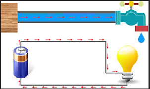

eletrônica básica
A tensão elétrica, ou voltagem, é a diferença de potencial entre dois pontos, ou seja, a "força" necessária para mover os elétrons e criar a corrente elétrica.
Medida em volts (V), ela é essencial para o funcionamento de equipamentos elétricos e eletrónicos.
O instrumento de medir tensão é o Voltímetro.
A tensão elétrica existe quando há uma "DDP" (diferença de potencial) nas cargas elétricas
Essa diferença de potencial é que faz mover as cargas elétricas para o restante de um circuito elétrico.
Ela pode ser comparada a uma diferença de altura, que faz a água fluir por um cano, de um ponto mais alto para um mais baixo, até se nivelar, só que a invés de água, estamos falando de elétrons e, em vez de altura, em potencial elétrico.
A unidade de medida de tensão é o Volt, representado pela letra "V" maiúscula.
CORRENTE ELÉTRICA
A Corrente Elétrica é o fenômeno físico em que os elétrons se movimentam em um condutor devido à aplicação de uma tensão (DDP).
A unidade de medida de Corrente é o Ampere e é representada pela letra "A" maiúscula.
TIPOS DE CORRENTE ELÉTRICA
CORRENTE CONTÍNUA (C.C.)
Esse tipo de corrente é comum em dispositivos que usam baixa tensão, como equipamentos eletrônicos em geral, que são alimentados por pilhas ou baterias.
CORRENTE ALTERNADA (C.A.)
POTÊNCIA ELÉTRICA
A unidade de medida de Potência é o Watt, representado pela letra "W" maiúscula.
A Resistência Elétrica é a oposição que um material faz à passagem de corrente elétrica. Ela existe devido às colisões entre os elétrons e os átomos de um condutor.
A Resistência é calculada pela Lei de Ohm através da fórmula: R= U/I , onde R é a Resistência em Ohms, U é a tensão em Volts e I é a corrente em Amperes.
A Unidade de medida Ohm "Ω" nomeada em homenagem ao físico alemão Georg Simon Ohm.
Esses foram os principais conceitos que usaremos na eletrônica, pois na maioria dos circuitos teremos de conhecer esses elementos: Tensão, Corrente, Potência e Resistência Elétrica.
Vídeo Relacionado: Como Funcioa a Eletricidade.